写在最前
Seaborn is a Python data visualization library based on matplotlib. It provides a high-level interface for drawing attractive and informative statistical graphics.
内容来自于Seaborn官方教程
可视化统计关系
1 | import numpy as np |
- replot()
- lineplot()
- scatterplot()
用散点图关联变量
1 | tips = sns.load_dataset("tips") # load_dateset()是从在线存储库加载数据集，极大方便了练习 |
| total_bill | tip | sex | smoker | day | time | size | |
|---|---|---|---|---|---|---|---|
| 0 | 16.99 | 1.01 | Female | No | Sun | Dinner | 2 |
| 1 | 10.34 | 1.66 | Male | No | Sun | Dinner | 3 |
| 2 | 21.01 | 3.50 | Male | No | Sun | Dinner | 3 |
| 3 | 23.68 | 3.31 | Male | No | Sun | Dinner | 2 |
| 4 | 24.59 | 3.61 | Female | No | Sun | Dinner | 4 |
1 | sns.relplot(x="total_bill", y="tip", data=tips) |
<seaborn.axisgrid.FacetGrid at 0x1a1ff4a4e0>
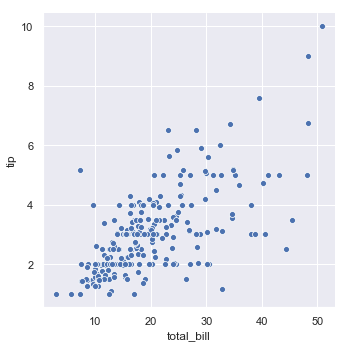
1 | sns.relplot(x="total_bill", y="tip",hue='size', data=tips) #hue参数对输入的变量进行分组，生成的不同的颜色 |
<seaborn.axisgrid.FacetGrid at 0x1a1fbbdc88>
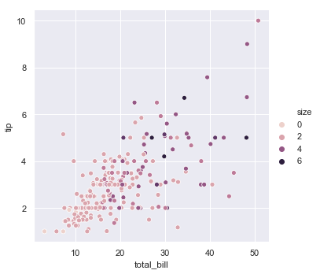
1 | sns.relplot(x="total_bill", y="tip",hue='size',size='size',sizes=(15,100),data=tips) # size,sizes一般搭配使用 |
<seaborn.axisgrid.FacetGrid at 0x1a203be5f8>
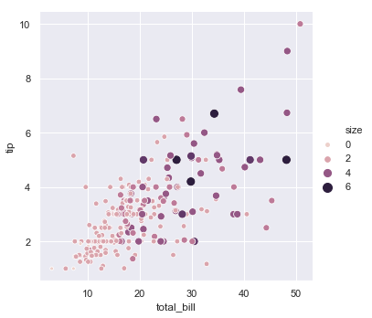
下面这个分组画图感觉会很有用,col参数决定行，row参数决定列
1 | sns.relplot(x="total_bill", y="tip",hue='size',size='size',sizes=(15,50),col='time',data=tips) |
<seaborn.axisgrid.FacetGrid at 0x1a205eb1d0>

1 | sns.relplot(x="total_bill", y="tip",hue='size',size='size',sizes=(15,50),col='time',row='sex',data=tips) |
<seaborn.axisgrid.FacetGrid at 0x1a209b8ef0>
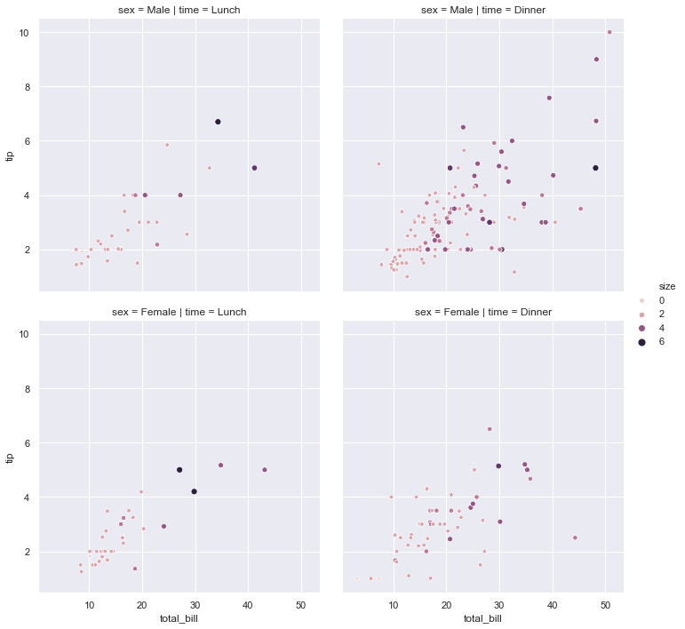
1 | sns.relplot(x="total_bill", y="tip",hue='time',col ='time',palette = ['b','r'],data=tips) #指定绘图的颜色 |
<seaborn.axisgrid.FacetGrid at 0x1a21a2b390>
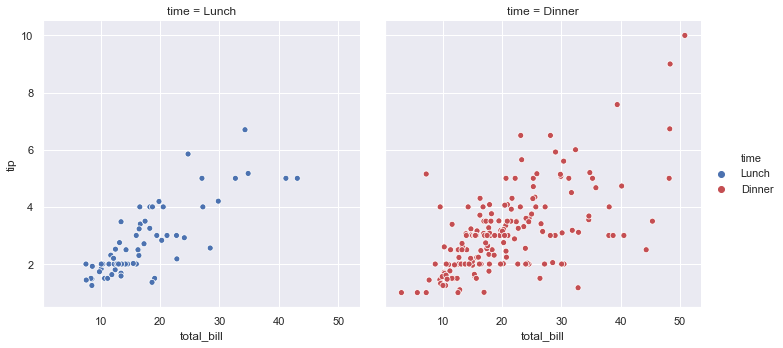
线图表示连续性
1 |
|
<seaborn.axisgrid.FacetGrid at 0x1a22642c88>
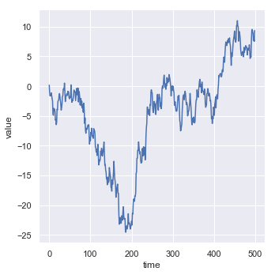
1 | sns.lineplot(x='time',y='value',data=df) |
<matplotlib.axes._subplots.AxesSubplot at 0x1a22879c18>
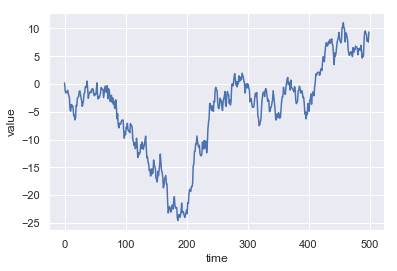
聚合和表示不确定性
如果x变量出现多次，那么seaborn会通过绘制平均值周围的其和95％置信区间来聚合每个值的多个测量值
这个对于不同的数据集是需要适应其变化的，假设是时间密集型的数据集，那么就需要禁用他们
1 | fmri = sns.load_dataset("fmri") |
<seaborn.axisgrid.FacetGrid at 0x1a229c42b0>
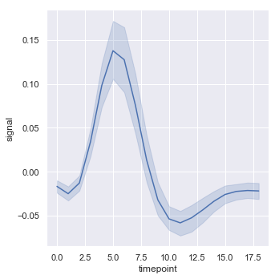
1 | #特别是对于较大的数据，可以通过绘制标准偏差而不是置信区间来表示每个时间点的分布扩散 |
<seaborn.axisgrid.FacetGrid at 0x1a22b6ce10>
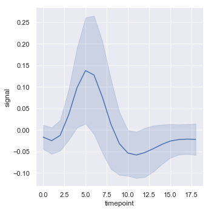
用语义映射绘制数据子集
1 | fmri.head() |
| subject | timepoint | event | region | signal | |
|---|---|---|---|---|---|
| 0 | s13 | 18 | stim | parietal | -0.017552 |
| 1 | s5 | 14 | stim | parietal | -0.080883 |
| 2 | s12 | 18 | stim | parietal | -0.081033 |
| 3 | s11 | 18 | stim | parietal | -0.046134 |
| 4 | s10 | 18 | stim | parietal | -0.037970 |
1 | sns.relplot(x="timepoint", y="signal", hue="event", kind="line", data=fmri); |
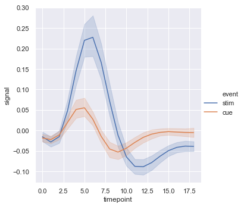
1 | sns.lineplot(x='timepoint',y='signal',hue='region',style='event',data=fmri) |
<matplotlib.axes._subplots.AxesSubplot at 0x1a23077320>
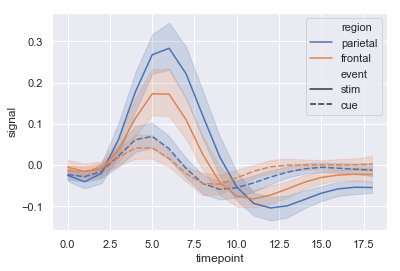
1 | #标识子集 |
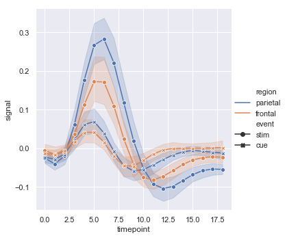
还可以单独绘制每个采样单位，而无需通过语义区分它们。这可以避免使图例混乱
1 | sns.relplot(x="timepoint", y="signal", hue="region", |
<seaborn.axisgrid.FacetGrid at 0x1a234eef98>
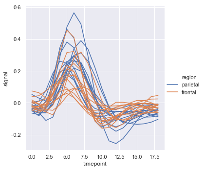
默认
lineplot()的色彩映射和图例的处理还取决于色调语义是分类还是数字
1 | dots = sns.load_dataset("dots").query("align == 'dots'") |
<seaborn.axisgrid.FacetGrid at 0x1a2370e7b8>
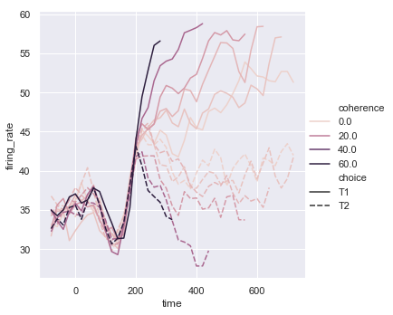
用日期数据绘图
线图通常用于可视化与实际日期和时间相关的数据。这些函数以原始格式将数据传递给底层的matplotlib函数，因此他们可以利用matplotlib在tick标签中设置日期格式的功能。
1 | df = pd.DataFrame(dict(time=pd.date_range("2017-1-1", periods=500), |
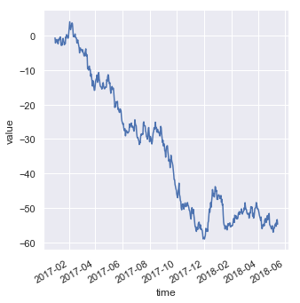
Showing multiple relationships with facets
1 | sns.relplot(x="timepoint", y="signal", hue="subject", |
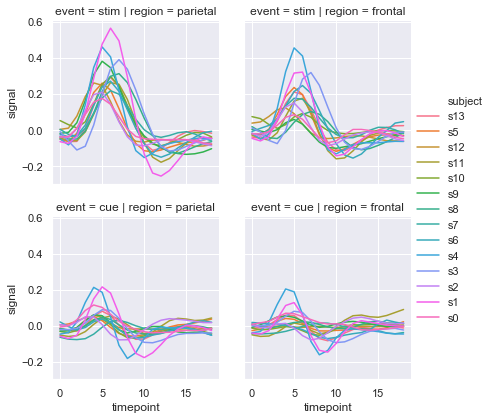
1 | sns.relplot(x="timepoint", y="signal", hue="event", style="event", |
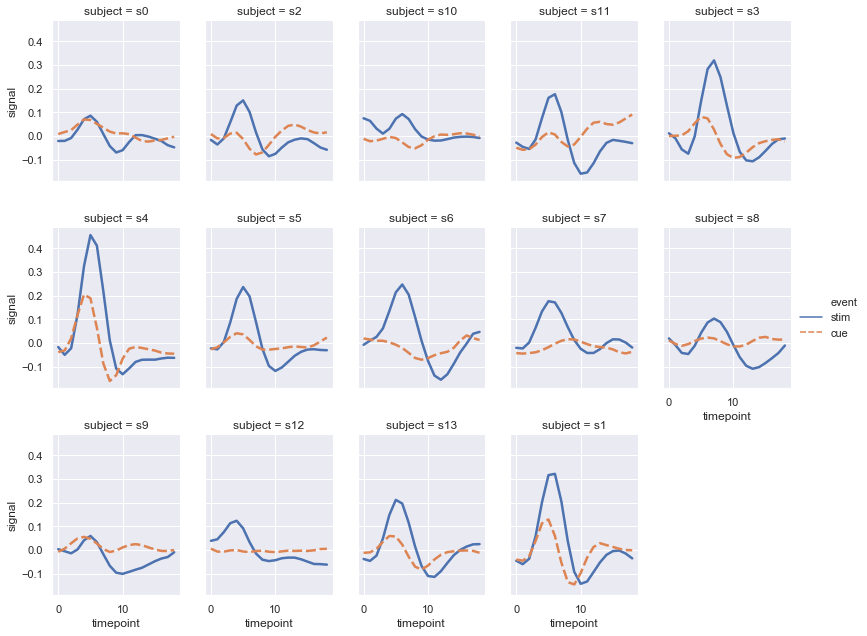